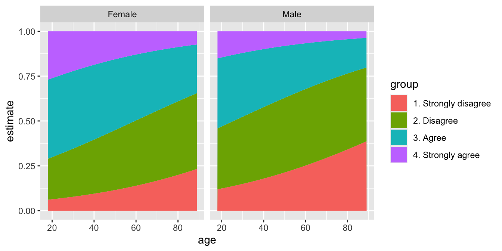
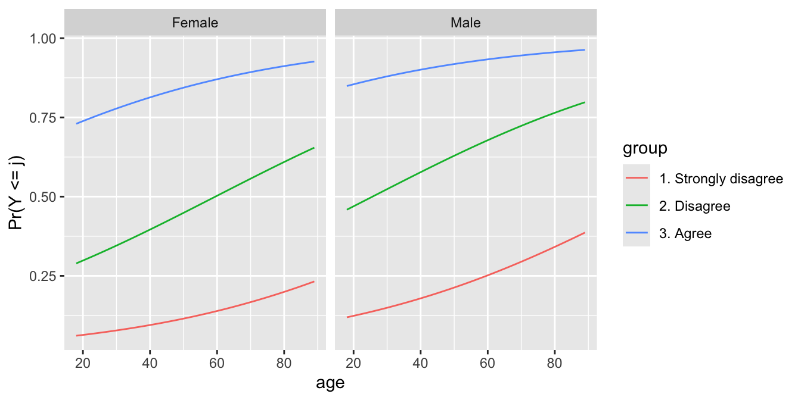
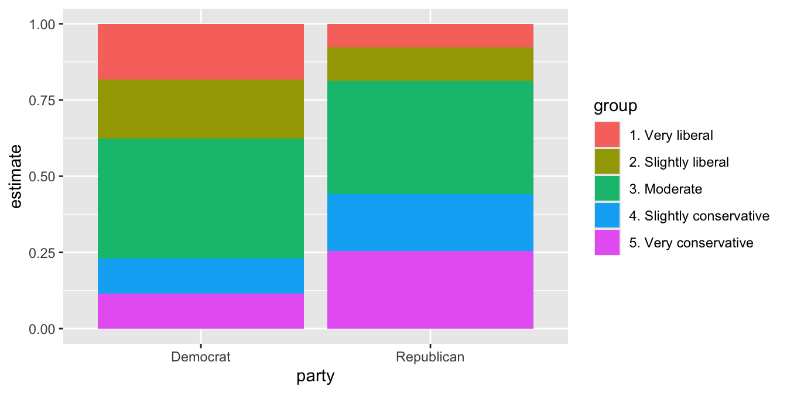
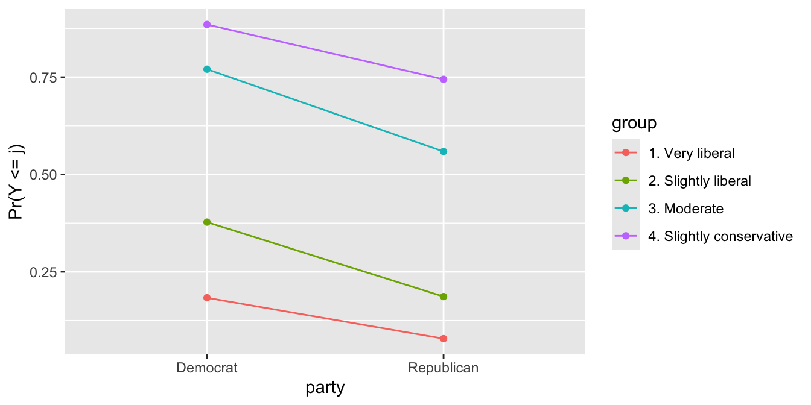

18 Ordered Logit
18.1 Ordered Outcomes
Suppose an ordered outcome \(y_i \in \{1, 2, \ldots, J\}\), where \(\{1, 2, \ldots, J\}\) correspond to qualitative labels that have a natural ordering.
Example 1. The ANES asks respondents to place themselves along a 7-point ideology scale with positions labeled “extremely liberal,” “liberal,” “slightly liberal,” “moderate/middle of the road,” “slightly conservative,” “conservative,” and “extremely conservative.” We typically let 1, 2, 3, 4, 5, 6, and 7 correspond to these seven ordered labels.
Example 2. The Political Terror Scale (PTS) is a country-year measure of state repression. This measure assigns one of five qualitative labels summarizing the amount of state repression to each country-year based on reports from Amnesty International and the U.S. State Department.
| Numeric Coding | Qualitative Label |
|---|---|
| 1 | Countries under a secure rule of law, people are not imprisoned for their views, and torture is rare or exceptional. Political murders are extremely rare. |
| 2 | There is a limited amount of imprisonment for nonviolent political activity. However, few persons are affected, torture and beatings are exceptional. Political murder is rare. |
| 3 | There is extensive political imprisonment, or a recent history of such imprisonment. Execution or other political murders and brutality may be common. Unlimited detention, with or without a trial, for political views is accepted. |
| 4 | Civil and political rights violations have expanded to large numbers of the population. Murders, disappearances, and torture are a common part of life. In spite of its generality, on this level terror affects those who interest themselves in politics or ideas. |
| 5 | Terror has expanded to the whole population. The leaders of these societies place no limits on the means or thoroughness with which they pursue personal or ideological goals. |
18.2 Ordered Logit
Let linear predictor \(\eta_i\) be our usual linear predictor so that \(\eta_i = X_i\beta\), except without an intercept \(\beta_0\).
Now define \(J-1\) “cutpoints” \(\alpha_1 < \alpha_2 < \cdots < \alpha_{J-1}\) that act as a separate intercept for each cumulative probability \(\Pr(Y_i \leq j)\).
The ordered logit defines the cumulative probabilities as
\[ \Pr(Y_i \leq j) = \operatorname{logit}^{-1}(\alpha_j - \eta_i), \qquad j = 1, \ldots, J-1. \]
Because the same \(\beta\) appears for every \(j\), the ordered logit is also called the proportional odds model. The log-odds of falling in category \(j\) or below is \(\log \left[ \dfrac{\Pr(Y_i \leq j)}{1 - \Pr(Y_i \leq j)} \right] = \alpha_j - \eta_i\), so a one-unit increase in \(x_{ik}\) changes the log-odds of \(Y_i \leq j\) by \(-\beta_k\) (multiplies the odds by \(e^{-\beta_k}\)) for every \(j\). Because of the minus sign, a positive \(\beta_k\) makes the lower categories less likely and the higher categories more likely. This is the parameterization that MASS::polr() (which calls the cutpoints zeta and prints them as “Intercepts”) and the cumulative() family in {brms} use.
Then probabilities for each category are
\[ \begin{align} \Pr(Y_i = 1) &= \operatorname{logit}^{-1}(\alpha_1 - \eta_i) \\ \Pr(Y_i = 2) &= \operatorname{logit}^{-1}(\alpha_2 - \eta_i) - \operatorname{logit}^{-1}(\alpha_{1} - \eta_i) \\ \Pr(Y_i = 3) &= \operatorname{logit}^{-1}(\alpha_3 - \eta_i) - \operatorname{logit}^{-1}(\alpha_{2} - \eta_i) \\ &\vdots\\ \Pr(Y_i = j) &= \overbrace{\operatorname{logit}^{-1}(\alpha_j - \eta_i)}^{\Pr(Y_i \leq j)} - \overbrace{\operatorname{logit}^{-1}(\alpha_{j-1} - \eta_i)}^{^{\Pr(Y_i \leq j-1)}}, \qquad j = 2, \ldots, J-1 \\ &\vdots\\ \Pr(Y_i = J) &= 1 - \operatorname{logit}^{-1}(\alpha_{J-1} - \eta_i). \end{align} \]
The figure below shows this graphically for an outcome with four possible values.
- I set the three cutpoints to \(\alpha = (-2.5,-1.3,1.3)\).
- I set the linear predictor for an example observation to \(\eta_i = -1.5\).
The figure shows how \(\alpha\) and \(\eta_i\) are translated into \(\Pr(Y_i = j)\).
18.3 Example: Approval of President Bush, 1992
- Data: 1992 ANES Time Series Study (Miller et al. 2016).
- Outcome: approval of President Bush’s job performance, four categories: strongly disapprove, disapprove, approve, and strongly approve.
- Predictors:
military_force: how willing the United States should be to use military force to solve international problems, from 1 (extremely willing) to 5 (never willing).ideology_distance: distance between the respondent’s ideology and where they place Bush, from 0 (same position) to 6 (opposite ends of the 7-point scale).economy: evaluation of the national economy compared with a year ago, from 1 (much better) to 5 (much worse).party_id: party identification, from −3 (strong Democrat) through 0 (independent) to 3 (strong Republican).education: years of education.
- 750 respondents; 558 complete on these variables.
Miller, Warren E., Donald R. Kinder, Steven J. Rosenstone, and University of Michigan. Institute for Social Research. American National Election Studies. 2016. “ANES 1992 Time Series Study.” Inter-university Consortium for Political; Social Research [distributor]. https://doi.org/10.3886/ICPSR06067.v3.
This example comes from Chris Adolph’s maximum likelihood course. The model and the codebook are described in his Problem Set 4 (Adolph 2025). Adolph fits an ordered probit (method = "probit" in polr()). I fit an ordered logit to match this chapter.
Adolph, Christopher. 2025. “Problem Set 4: Modeling Presidential Approval with Ordered Probit.” POLS/CSSS 510: Maximum Likelihood Methods for the Social Sciences, University of Washington, Fall Quarter 2025. https://faculty.washington.edu/cadolph/mle/510hw4.pdf.
library(tidyverse)
library(MASS) # masks dplyr::select()
library(marginaleffects)
# load data
approval <- read_csv("data/bush-approval-1992.csv") |>
mutate(bush_approval = factor(bush_approval, ordered = TRUE)) |>
glimpse()Rows: 750
Columns: 10
$ bush_approval <ord> 4. Strongly approve, 4. Strongly approve, 3. Approve…
$ military_force <dbl> 3, 2, 3, 1, 3, 3, 3, 2, 3, 1, 4, 4, 2, 2, 3, 1, 3, 2…
$ ideology_distance <dbl> 3, 0, 1, 1, NA, NA, NA, 1, 1, 1, 2, NA, 0, 1, NA, 1,…
$ economy <dbl> 4, 4, 3, 3, 5, 5, 4, 2, 4, 3, 5, 5, 4, 4, 4, 5, 5, 4…
$ party_id <dbl> 2, 3, 3, 3, -2, -3, 2, 3, 2, 1, -3, -2, -2, 3, -3, 2…
$ education <dbl> 17, 8, 16, 11, 13, 12, 16, 17, 13, 17, 11, 8, 12, 16…
$ ideology <dbl> 3, 6, 6, 6, NA, 4, 6, 7, 6, 7, 2, 5, 3, 5, NA, 5, NA…
$ gulf_war <dbl> 1, 1, 1, 0, 0, 0, 0, 1, 1, 1, 0, 0, 0, 1, 1, 1, 0, 1…
$ nonwhite <dbl> 0, 0, 0, 1, 0, 1, 0, 0, 0, 0, 1, 0, 0, 0, 0, 0, 0, 0…
$ vote_1992 <chr> "Bush", "Bush", "Bush", "Clinton", "Clinton", "Clint…# check the order of the outcome
levels(approval$bush_approval)[1] "1. Strongly disapprove" "2. Disapprove" "3. Approve"
[4] "4. Strongly approve" # fit ordered logit
fit_approval <- polr(bush_approval ~ military_force + ideology_distance +
economy + party_id + education,
data = approval, Hess = TRUE)
summary(fit_approval)Call:
polr(formula = bush_approval ~ military_force + ideology_distance +
economy + party_id + education, data = approval, Hess = TRUE)
Coefficients:
Value Std. Error t value
military_force -0.56048 0.10861 -5.160
ideology_distance -0.36441 0.06611 -5.512
economy -0.59655 0.09957 -5.991
party_id 0.43999 0.05214 8.438
education -0.07244 0.03710 -1.953
Intercepts:
Value Std. Error t value
1. Strongly disapprove|2. Disapprove -6.9981 0.7509 -9.3198
2. Disapprove|3. Approve -5.5145 0.7286 -7.5684
3. Approve|4. Strongly approve -3.2725 0.7031 -4.6544
Residual Deviance: 1175.889
AIC: 1191.889
(192 observations deleted due to missingness)- Positive
party_idcoefficient means that higher categories more likely (sign convention above), so Republicans are more approving. - Negative coefficients indicate who is more disapproving:
- respondents who are more opposed to military force
- respondents who are are ideologically further from Bush
- respondent who perceive the economy as worse.
# probabilities across military_force for strong Democrats and strong Republicans
p <- predictions(fit_approval,
newdata = datagrid(military_force = 1:5,
party_id = c(-3, 3))) |>
glimpse()Rows: 40
Columns: 15
$ rowid <int> 1, 2, 3, 4, 5, 6, 7, 8, 9, 10, 1, 2, 3, 4, 5, 6, 7, …
$ group <fct> 1. Strongly disapprove, 1. Strongly disapprove, 1. S…
$ estimate <dbl> 0.27122253, 0.02587275, 0.39461553, 0.04445201, 0.53…
$ std.error <dbl> 0.058140543, 0.007652858, 0.052186323, 0.010035746, …
$ statistic <dbl> 4.664947, 3.380796, 7.561666, 4.429368, 11.877471, 5…
$ p.value <dbl> 3.086971e-06, 7.227631e-04, 3.979397e-14, 9.450975e-…
$ s.value <dbl> 18.30538, 10.43419, 44.51444, 16.69111, 105.66956, 2…
$ conf.low <dbl> 0.15726916, 0.01087342, 0.29233222, 0.02478231, 0.44…
$ conf.high <dbl> 0.38517590, 0.04087207, 0.49689884, 0.06412171, 0.62…
$ military_force <int> 1, 1, 2, 2, 3, 3, 4, 4, 5, 5, 1, 1, 2, 2, 3, 3, 4, 4…
$ party_id <dbl> -3, 3, -3, 3, -3, 3, -3, 3, -3, 3, -3, 3, -3, 3, -3,…
$ df <dbl> Inf, Inf, Inf, Inf, Inf, Inf, Inf, Inf, Inf, Inf, In…
$ economy <int> 4, 4, 4, 4, 4, 4, 4, 4, 4, 4, 4, 4, 4, 4, 4, 4, 4, 4…
$ education <int> 14, 14, 14, 14, 14, 14, 14, 14, 14, 14, 14, 14, 14, …
$ ideology_distance <int> 2, 2, 2, 2, 2, 2, 2, 2, 2, 2, 2, 2, 2, 2, 2, 2, 2, 2…ggplot(p, aes(x = military_force, y = estimate, fill = group)) +
geom_area(position = position_stack(reverse = TRUE)) +
facet_wrap(vars(party_id), labeller = label_both)
- Other predictors at their means (
datagrid()default). - For strong Democrats: Pr(strongly disapprove) about 0.27 at
military_force = 1and about 0.78 atmilitary_force = 5. - For strong Republicans: Pr(strongly approve) about 0.48 at
military_force = 1, about 0.09 atmilitary_force = 5. - Interactive version: choose the x-axis and facet predictors below and set the rest; the code under the plot reproduces whatever it draws.
18.3.1 Computing cumulative probabilities
- Note that
predictions()returns \(\Pr(Y_i = j)\)—there is one row per category.
# cumulative probabilities: Pr(Y <= j) and Pr(Y >= j)
cumulative_p <- p |>
1 arrange(party_id, military_force, group) |>
2 group_by(party_id, military_force) |>
3 mutate(pr_le = cumsum(estimate),
4 pr_ge = 1 - lag(cumsum(estimate), default = 0)) |>
ungroup()
# one grid point: strong Democrats at military_force = 3
cumulative_p |>
filter(party_id == -3, military_force == 3) |>
dplyr::select(group, estimate, pr_le, pr_ge)- 1
- Sort the categories into their order within each grid point, so the running sum accumulates from category 1 upward.
- 2
-
One running sum per grid point, i.e., per combination of
party_idandmilitary_force. - 3
- \(\Pr(Y_i \leq j)\): the running sum \(\Pr(Y_i = 1) + \cdots + \Pr(Y_i = j)\).
- 4
-
\(\Pr(Y_i \geq j) = 1 - \Pr(Y_i \leq j - 1)\):
lag()shifts the running sum down one category, anddefault = 0covers \(j = 1\).
# A tibble: 4 × 4
group estimate pr_le pr_ge
<fct> <dbl> <dbl> <dbl>
1 1. Strongly disapprove 0.533 0.533 1
2 2. Disapprove 0.301 0.834 0.467
3 3. Approve 0.145 0.979 0.166
4 4. Strongly approve 0.0207 1 0.0207- \(\Pr(Y_i \leq J)\) and \(\Pr(Y_i \geq 1)\) are always 1; drop them before plotting.
# plot Pr(Y <= j) for j = 1, 2, 3
cumulative_p |>
filter(group != "4. Strongly approve") |>
ggplot(aes(x = military_force, y = pr_le, color = group)) +
geom_line() +
geom_point() +
facet_wrap(vars(party_id), labeller = label_both) +
labs(y = "Pr(Y <= j)")
- Strong Democrats at
military_force = 3: Pr(strongly disapprove) 0.53, Pr(disapprove or worse) 0.83, Pr(approve or worse) 0.98. - Each curve is one cutpoint: \(\Pr(Y_i \leq j) = \operatorname{logit}^{-1}(\alpha_j - \eta_i)\), so the three curves move together as \(\eta_i\) changes. (This is the proportional-odds (parallel) structure.)
- The stacked
geom_area()above draws the same curves:position_stack(reverse = TRUE)puts the first level at the bottom, so the top edge of band \(j\) is \(\Pr(Y_i \leq j)\), thepr_lecolumn—atmilitary_force = 3for strong Democrats, 0.53, 0.83, and 0.98. (ggplot’s default,position = "stack", stacks the first level on top, and the edges become \(\Pr(Y_i \geq j)\) instead.)
18.4 Example: Working mothers, GSS 1977 and 1989
- Data: General Social Survey, 1977 and 1989 (Smith et al. 2019).
- Outcome: agreement with “A working mother can establish just as warm and secure a relationship with her children as a mother who does not work,” four categories: strongly disagree, disagree, agree, and strongly agree.
- Predictors:
year: survey year, 1977 or 1989.gender: female or male.race: nonwhite or white.age: age in years, from 18 to 89.education: years of education, from 0 to 20.prestige: occupational prestige score, from 12 to 82 (higher scores are more prestigious occupations).
- 2,293 respondents, no missing values.
Smith, Tom W., Michael Davern, Jeremy Freese, and Stephen L. Morgan. 2019. “General Social Surveys, 1972–2018 [Machine-Readable Data File].” Chicago: NORC.
These are the ordwarm2 data of Long (1997, ch. 5) and Long and Freese (2014, ch. 7). The model below is Long and Freese’s ordered logit, and the estimates match theirs.
Long, J. Scott. 1997. Regression Models for Categorical and Limited Dependent Variables. Vol. 7. Advanced Quantitative Techniques in the Social Sciences. Thousand Oaks, CA: Sage.
Long, J. Scott, and Jeremy Freese. 2014. Regression Models for Categorical Dependent Variables Using Stata. 3rd ed. College Station, TX: Stata Press.
library(tidyverse)
library(MASS) # masks dplyr::select()
library(marginaleffects)
# load data
warm <- read_csv("data/working-mothers-gss.csv") |>
mutate(warm = factor(warm, ordered = TRUE)) |>
glimpse()Rows: 2,293
Columns: 7
$ warm <ord> 1. Strongly disagree, 1. Strongly disagree, 1. Strongly disa…
$ year <dbl> 1977, 1977, 1989, 1977, 1977, 1989, 1977, 1977, 1977, 1977, …
$ gender <chr> "Female", "Male", "Male", "Female", "Female", "Male", "Femal…
$ race <chr> "White", "White", "White", "White", "White", "White", "White…
$ age <dbl> 33, 74, 36, 73, 59, 33, 43, 48, 27, 46, 75, 34, 64, 46, 59, …
$ education <dbl> 10, 16, 12, 9, 11, 4, 7, 12, 17, 12, 8, 12, 11, 12, 12, 6, 1…
$ prestige <dbl> 31, 50, 41, 36, 62, 17, 40, 48, 69, 50, 41, 47, 40, 31, 55, …# check the order of the outcome
levels(warm$warm)[1] "1. Strongly disagree" "2. Disagree" "3. Agree"
[4] "4. Strongly agree" # fit ordered logit
fit_warm <- polr(warm ~ factor(year) + gender + race + age + education + prestige,
data = warm, Hess = TRUE)
summary(fit_warm)Call:
polr(formula = warm ~ factor(year) + gender + race + age + education +
prestige, data = warm, Hess = TRUE)
Coefficients:
Value Std. Error t value
factor(year)1989 0.523912 0.079899 6.557
genderMale -0.733309 0.078483 -9.344
raceWhite -0.391140 0.118381 -3.304
age -0.021666 0.002469 -8.777
education 0.067176 0.015975 4.205
prestige 0.006072 0.003293 1.844
Intercepts:
Value Std. Error t value
1. Strongly disagree|2. Disagree -2.4654 0.2389 -10.3188
2. Disagree|3. Agree -0.6309 0.2333 -2.7042
3. Agree|4. Strongly agree 1.2618 0.2340 5.3919
Residual Deviance: 5689.825
AIC: 5707.825 - Matches Long & Freese:
factor(year)19890.52,genderMale−0.73,raceWhite−0.39,age−0.02,education0.07,prestige0.006. - Men, whites, and older respondents less likely to agree; 1989 respondents and the more educated more likely.
# probabilities across age, by gender
p <- predictions(fit_warm,
newdata = datagrid(age = 18:89,
gender = unique)) |>
glimpse()Rows: 576
Columns: 16
$ rowid <int> 1, 2, 3, 4, 5, 6, 7, 8, 9, 10, 11, 12, 13, 14, 15, 16, 17, 1…
$ group <fct> 1. Strongly disagree, 1. Strongly disagree, 1. Strongly disa…
$ estimate <dbl> 0.06104151, 0.11921253, 0.06229517, 0.12150629, 0.06357283, …
$ std.error <dbl> 0.006562767, 0.011012905, 0.006590978, 0.011019420, 0.006619…
$ statistic <dbl> 9.301184, 10.824803, 9.451581, 11.026560, 9.604216, 11.23184…
$ p.value <dbl> 1.388902e-20, 2.626440e-27, 3.337506e-21, 2.845415e-28, 7.67…
$ s.value <dbl> 65.96462, 88.29895, 68.02172, 91.50535, 70.14245, 94.82759, …
$ conf.low <dbl> 0.04817872, 0.09762763, 0.04937709, 0.09990863, 0.05059931, …
$ conf.high <dbl> 0.07390429, 0.14079743, 0.07521325, 0.14310396, 0.07654635, …
$ age <int> 18, 18, 19, 19, 20, 20, 21, 21, 22, 22, 23, 23, 24, 24, 25, …
$ gender <chr> "Female", "Male", "Female", "Male", "Female", "Male", "Femal…
$ df <dbl> Inf, Inf, Inf, Inf, Inf, Inf, Inf, Inf, Inf, Inf, Inf, Inf, …
$ education <int> 12, 12, 12, 12, 12, 12, 12, 12, 12, 12, 12, 12, 12, 12, 12, …
$ prestige <int> 40, 40, 40, 40, 40, 40, 40, 40, 40, 40, 40, 40, 40, 40, 40, …
$ race <chr> "White", "White", "White", "White", "White", "White", "White…
$ year <dbl> 1977, 1977, 1977, 1977, 1977, 1977, 1977, 1977, 1977, 1977, …ggplot(p, aes(x = age, y = estimate, fill = group)) +
geom_area(position = position_stack(reverse = TRUE)) +
facet_wrap(vars(gender))
- Year and race at their modes, education and prestige at their means.
- Women: Pr(strongly agree) about 0.26 at age 20, about 0.09 at 80.
- Men: Pr(strongly disagree) about 0.12 at 20, about 0.34 at 80.
- Band edges are \(\Pr(Y_i \leq j)\) (
reverse = TRUEstacks the first level at the bottom).
# cumulative probabilities Pr(Y <= j), then plot j = 1, 2, 3
cumulative_p <- p |>
arrange(gender, age, group) |>
group_by(gender, age) |>
mutate(pr_le = cumsum(estimate)) |>
ungroup()
cumulative_p |>
filter(group != "4. Strongly agree") |>
ggplot(aes(x = age, y = pr_le, color = group)) +
geom_line() +
facet_wrap(vars(gender)) +
labs(y = "Pr(Y <= j)")
- Three parallel curves per panel, one per cutpoint; men’s curves sit above women’s (less agreement).
18.5 Example: Political ideology by party
- Data: General Social Survey (no year given), as tabulated in Table 6.7 of Agresti (2007, sec. 6.2.2), summed over gender and expanded to one row per respondent.
- Outcome: political ideology, five categories: very liberal, slightly liberal, moderate, slightly conservative, and very conservative.
- Predictor:
party, Democrat or Republican. - 835 respondents, no missing values.
This is Agresti’s ordered logit; he calls it a cumulative logit or proportional odds model. The same model is the example in a UVA StatLab tutorial (Ford 2015).
Ford, Clay. 2015. “Fitting and Interpreting a Proportional Odds Model.” University of Virginia Library, StatLab. https://library.virginia.edu/data/fitting-and-interpreting-a-proportional-odds-model/.
library(tidyverse)
library(MASS) # masks dplyr::select()
library(marginaleffects)
# load data
ideology <- read_csv("data/ideology-party.csv") |>
mutate(ideology = factor(ideology, ordered = TRUE)) |>
glimpse()Rows: 835
Columns: 2
$ ideology <ord> 1. Very liberal, 1. Very liberal, 1. Very liberal, 1. Very li…
$ party <chr> "Democrat", "Democrat", "Democrat", "Democrat", "Democrat", "…# check the order of the outcome
levels(ideology$ideology)[1] "1. Very liberal" "2. Slightly liberal"
[3] "3. Moderate" "4. Slightly conservative"
[5] "5. Very conservative" # fit ordered logit
fit_ideology <- polr(ideology ~ party,
data = ideology, Hess = TRUE)
summary(fit_ideology)Call:
polr(formula = ideology ~ party, data = ideology, Hess = TRUE)
Coefficients:
Value Std. Error t value
partyRepublican 0.9745 0.1292 7.544
Intercepts:
Value Std. Error t value
1. Very liberal|2. Slightly liberal -1.4944 0.1136 -13.1559
2. Slightly liberal|3. Moderate -0.5000 0.0945 -5.2929
3. Moderate|4. Slightly conservative 1.2116 0.1038 11.6770
4. Slightly conservative|5. Very conservative 2.0441 0.1193 17.1288
Residual Deviance: 2474.985
AIC: 2484.985 - Matches Agresti:
partyRepublican0.975 (SE 0.129) (Agresti 2007, 183). - Republicans much more conservative.
Agresti, Alan. 2007. An Introduction to Categorical Data Analysis. 2nd ed. Hoboken, NJ: Wiley. https://doi.org/10.1002/0470114754.
# probabilities for Democrats and Republicans
p <- predictions(fit_ideology,
newdata = datagrid(party = unique)) |>
glimpse()Rows: 10
Columns: 11
$ rowid <int> 1, 2, 1, 2, 1, 2, 1, 2, 1, 2
$ group <fct> 1. Very liberal, 1. Very liberal, 2. Slightly liberal, 2. Sl…
$ estimate <dbl> 0.18325956, 0.07806872, 0.19427045, 0.10818956, 0.39305947, …
$ std.error <dbl> 0.01700208, 0.00948418, 0.01617828, 0.01097988, 0.01761715, …
$ statistic <dbl> 10.778658, 8.231468, 12.008104, 9.853440, 22.311179, 21.3126…
$ p.value <dbl> 4.341727e-27, 1.849331e-16, 3.221477e-33, 6.623716e-23, 2.87…
$ s.value <dbl> 87.57379, 52.26385, 107.93590, 73.67671, 363.88699, 332.4002…
$ conf.low <dbl> 0.14993610, 0.05948007, 0.16256161, 0.08666939, 0.35853048, …
$ conf.high <dbl> 0.21658301, 0.09665737, 0.22597929, 0.12970972, 0.42758845, …
$ party <chr> "Democrat", "Republican", "Democrat", "Republican", "Democra…
$ df <dbl> Inf, Inf, Inf, Inf, Inf, Inf, Inf, Inf, Inf, Infggplot(p, aes(x = party, y = estimate, fill = group)) +
geom_col()
- One binary predictor, so
xtakes two values.geom_area()needs a numericxand draws nothing for a characterx;geom_col()stacks the same probabilities as columns. - Pr(very liberal) about 0.18 for Democrats, about 0.08 for Republicans.
- Pr(moderate) about the same for both parties, 0.39 and 0.37.
- Column boundaries are \(\Pr(Y_i \geq j)\) (first level stacked on top), as in the two figures above.
# cumulative probabilities Pr(Y <= j), then plot j = 1, ..., 4
cumulative_p <- p |>
arrange(party, group) |>
group_by(party) |>
mutate(pr_le = cumsum(estimate)) |>
ungroup()
cumulative_p |>
filter(group != "5. Very conservative") |>
ggplot(aes(x = party, y = pr_le, color = group, group = group)) +
geom_line() +
geom_point() +
labs(y = "Pr(Y <= j)")
- Every cumulative probability drops from Democrats to Republicans by the same amount on the log-odds scale, 0.97, the
partyRepublicancoefficient.